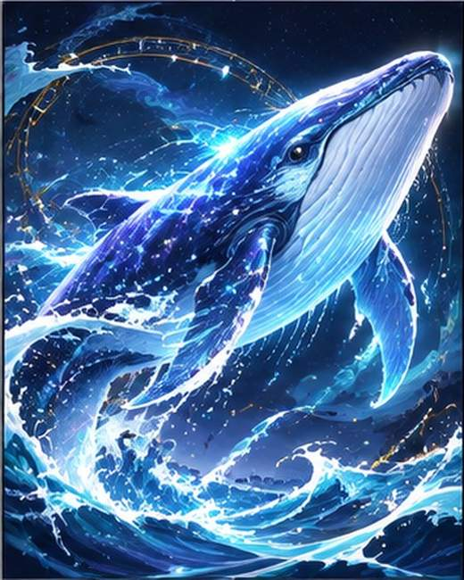

✦ DESTINY GARDEN 2027 ✦

심해의 고래
큰 바다에서 영감을 받은 수호신
태어난 날의 상징에서 영감을 받은 수호신이에요. 재미로 즐기는 판타지 캐릭터이며, 생년월일은 공개되지 않아요.
나의 수호신 찾아보기✦ DESTINY GARDEN 2027 ✦

큰 바다에서 영감을 받은 수호신
태어난 날의 상징에서 영감을 받은 수호신이에요. 재미로 즐기는 판타지 캐릭터이며, 생년월일은 공개되지 않아요.
나의 수호신 찾아보기